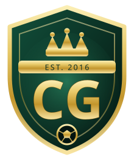
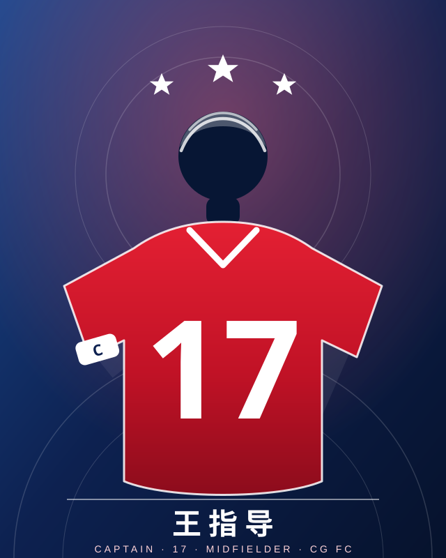

主场与训练基地
长清全民健身中心足球场。每周三、周六 19:00 训练，周末进行友谊赛与联赛。

CG足球俱乐部 济南 · 长清 · EST. 2018济南市 · 长清区 · EST. 2018
「跑不死，就一直往前踢。」
2018 年，长清的一群人在水泥球场上凑齐了第一套球衣。
八年过去，我们踢了 100 场比赛，拿下 5 座奖杯，队里有了 48 个人。
OUR CLUB
2018 年的春天，济南市长清区的一群人在大学城的球场上踢了第一场正式比赛。 那天凑人凑到开赛前十分钟，最后靠一个路过的校友补上第十一个人——我们赢了 3:2。
我们把队名里的 CG 理解为 Come Together, Go Further—— 先聚在一起，再走得更远。红是长清夏天的太阳，蓝是我们每个周三晚上头顶的天。
球队的信条只有三条：先跑起来、谁都能上场、踢完一起吃饭。 我们不是职业队，我们有上班的、有开店的、有还在读书的， 但每周三和周六晚上 7 点，长清全民健身中心的灯一亮，48 个人里总有一半会出现在场上。
长清全民健身中心足球场。每周三、周六 19:00 训练，周末进行友谊赛与联赛。
副歌只有一句：「把球往前踢，别管跑得动跑不动。」落后的时候全场唱得比谁都大声。
没有替补席之外的等级：迟到的洗球，丢球的捡球，赛后所有人一起吃饭，队长买单的那种。
王冠代表野心，斜切的红蓝色代表我们来自长清的白天与夜晚，盾牌代表「谁也别想轻易进来」。
CLUB HISTORY
从 2018 年第一场 3:2，到 2025 年的第 100 场 5:2—— 下面是这支球队记得最清楚的九场球。截至今天，战绩 62 胜 18 平 20 负，进 289 球，失 176 球。
说明 本页战绩与荣誉为球队内部记录与回忆整理，非职业联赛官方数据；比赛细节按队员口述整理。
球队的第一场正式比赛，开赛前十分钟还差一个人，最后拉了一位路过的校友凑数。 第 14 分钟，17 号王指导打进队史第一球；终场 3:2。 那天大家穿的球衣有七种颜色，赛后拍了第一张合影。
「从那天开始，我们才算有了球队。」——老队员 张浩
91 号 C罗在这一场独进 5 球，其中两脚是禁区外直接抽射。 更衣室里大家第一次意识到：我们好像不只是来踢着玩的。
「那场球之后，我们才买了第一套统一的球衣。」——91 号 C罗
球队第一次参加市级联赛，客场作战，上半场 0:2 落后。 下半场靠着全队压上连追两球，最后一分钟对方单刀，69 号迪马利亚一路回追，在门线上把球铲了出去，守住了平局。
「被人按着打了 45 分钟，但我们没散。」——队长 王指导
雨大到看不清对面球门，草皮积水，我们的地面传控完全打不出来。 第 88 分钟王指导远射扳回一球，但终究没追平。那场球之后，球队开始固定每周练一次体能。
「输球不丢人，跑不动才丢人。」——赛后队内总结
第 50 场比赛前，球队正式把袖标交给 17 号王指导——当时他 18 岁，是队里最年轻的。 那天他两传一射，赛后第一次以队长身份请全队吃饭。
「袖标不是给我的，是给场边那些等着上场的人的。」——王指导
决赛对手是那年状态最好的张夏队。第 76 分钟，C罗被两人夹住的情况下捅进反超球。 终场哨响的时候，替补席上的人冲进场里，把教练一起抬了起来。
「第一次拿杯子，队长抱着奖杯哭得像个孩子。」——队医记录
0:1 落后时，王指导在 30 分钟内连进三球：一记外脚背挑传后的抢点、一记 25 米任意球、 还有一粒第 89 分钟的反击单刀。这是队史第一个决赛帽子戏法。
「他不是跑得最快的，但他知道球会往哪儿去。」——对手教练赛后评价
决赛全场零失球。69 号迪马利亚在下半场连续两次在门线上把球解围出去， 赛后统计他完成了身披 69 号球衣的第 300 次解围——当然，这个数字里也算上了他今年那个著名的漏人失误。
「他一天能丢三个球，也能一天救三个必进球。」——队长 王指导
第 100 场比赛，教练要求「只要上场就都给我射一脚」。 最终五个不同的队员进球，全队 48 人在场上都拿到了出场时间。 赛后第 12 分钟，全场为建队那年去世的老队员家属鼓掌。
「100 场不是终点，是我们刚刚打完热身。」——全体队员
OUR CAPTAIN
17 号 · 中场 · 23 岁 · 绰号「手术刀」

2018 年建队那天他 14 岁，是队里年龄最小的一个，穿着借来的球鞋踢完了第一场球。 2021 年，18 岁的他戴上了袖标；2025 年，他带队打完第 100 场比赛，还是队长。
他不追求自己进球。他追求的是那句「他早就看见了我」—— 球还没离开他的脚，前锋已经开始跑了。队友管他的直塞叫「手术刀」。
「我不追求进球，我追求那句——
『他早就看见了我』。」 王指导（德布劳硕）· 17 号
2018 年建队首战，他借了别人的球鞋上场，第 14 分钟打进队史第一球。赛后他说：「我以为大家只是踢着玩。」
对手开始盯人防守，他连续 6 场没有助攻。于是他每天提前一小时到场，只练一件事：接球前回头看身后。
对崮云湖的一场雨天比赛，他一脚外脚背贴地传球穿过三名防守球员。解说（其实是场边队员）喊了一句「这传球像开刀」，绰号从此没下来。
对抗中扭伤膝盖，休战近一年。复出第一场就送出两次助攻；那天他跑得比以前慢，但传球比以前快。
第 50 场纪念赛前，老队长把袖标交给他，只说了一句：「记住，袖标是给场边等上场的人的。」那天他两传一射。
带着平均年龄大他 8 岁的队友打市级联赛，一整个赛季没有一次因为判罚跟裁判争吵——他规定：谁去吵，谁下场。
2022 年"健身杯"决赛 2:1 夺冠。终场哨响他抱着奖杯坐在草地上哭，队友说他抱了 20 分钟没撒手。
2023 年市级联赛决赛，0:1 落后时连进三球。第三球是第 89 分钟的单刀——他选择不庆祝，先去把球捡回来。
卫冕"泉水杯"的第二天，他一个人把奖杯拿到长清全民健身中心，给在场边看球的孩子们轮流举了一遍。
年度 91 球、31 次助攻，拿下队内最佳射手。 更衣室里贴着他的那句话：「下一脚球，才是最重要的那一脚。」
用右脚外脚背把球贴地削出弧线，绕过最后一名后卫，落在门将与中卫之间。球速不快，但落点从不撒谎。
接球前先看一眼身后，触球那一下就把身体转到面向球门。所以他总比对手快半秒。
蓄力射门的姿势，最后 0.2 秒改成横传。全队的进球有一半来自这个假动作。
OUR SQUAD
上班的、开店的、还在念书的——每周三、周六晚上 7 点，长清全民健身中心的灯一亮，他们就在场上。
图片说明 队员头像来自球队群聊截图，仅用于本队内部与官网展示；如本人不希望头像公开，告诉队长撤下即可。
没有找到符合条件的队员。
TROPHY ROOM
柜子不大，但每一格里都有一段很吵的回忆。
2022 · 决赛 2:1 张夏队 · 队史首冠
2023 · 决赛 3:1 章丘兄弟连
2024 · 决赛 2:0 历下老兵 · 卫冕
2025 · 决赛点球 4:3 崮云湖队
2021 · 区体育中心评选
BIG AWARDS 2025
四个大奖杯，四个人。鼠标停在奖杯上，它会转得更快一点。
AWARDS 2025
奖杯是给球队的，这些奖是给每个人的：48 个队员，48 个奖， 包括那个谁都不太想拿的。
JOIN US
你传球的时候会不会抬头，还有——你丢了球以后会不会往回跑。